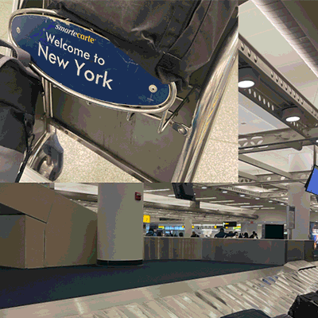

DAN MILLER
Table of Contents
1 – Systems
Location Intelligence Platform
Trading in locale


What is the system?
The proliferation of location data has changed place and people’s experience of it. Commonly referred to as Points of Interest (POI), these data work through web maps and spatial media to become deeply embedded within the tools people use to navigate, understand, and situate themselves within the world around them. These tools, and the data, experiences, use cases, the places they describe, and the companies and actors that develop them are all elements that constitute a kind of platform, often describing itself as engaged in “location intelligence”. I’m interested in describing contemporary, digital location intelligence platforms through a systems lens.
There are many possible functions of location intelligence platforms, but they primarily fall under the directive of selling information about places, their specific locations, characteristics, how they are used, and how they relate to other places. The corporations involved in developing these platforms also tend to use language that dips into the humanistic and experiential, but it is not clear that “unlocking the power of places and movement, etc etc” has objectives beyond producing and circulating money across certain geographies.


"This is “location intelligence”: the measurement and valuation of location and locale in terms of how someone may spend time and money there."

And while the sense and experience of places that comes along with being a body is rich, complicated, subjective, and impossible to fully reduce or capture into quantified terms alone, POI and their prevalence work to collapse notions of place, the experiences people have of them, the way people move through and between them into something that can be commodified, measured and analyzed and “ground truthed” computationally, with ever increasing frequency, remoteness, and automation. This is “location intelligence”: the measurement and valuation of location and locale in terms of how someone may spend time and money there. This intelligence is the stock, or product, of platforms.
Corporations trade in these data, towards this intelligence, to influence and inform land use decision-making, design, strategy. These points are ingested by algorithms to fix rent prices and parameterize master plans. Now there is no place that escapes this capitalized lens on landscape. Place is consumed for consumers. This process is a kind of reinforcing feedback loop – places become quantified and understood through location intelligence platforms and then in turn change, as subjects of the logics of the systems capturing and disseminating information about them in very particular ways. If using the data and using the places they describe are goals of location intelligence platforms, then use is a key factor in frequency, delays, and resilience of these platforms and their inputs and outputs.

2 – Authorship
Location Intelligence Platform
A cartographic history of place-making?
I do not want to take prevailing ideas about what constitutes “location intelligence” and its attendant systems or stakeholders as given. I’m excited about re-imagining them and shifting the relationship between stakeholders in the system, and the relationship between those stakeholders and the places (landscapes, locales, etc) that are the substrate and subject of location intelligence platforms.
Most of the design features and elements of location intelligence platforms that are locked-in trace their roots in the long history of European cartography. Which synthesizes and abstracts information in such a way that flattens place, controlling for risk, uncertainty, time. These maps, charts, and cadastres make space navigable and legible as a site for investment, extraction, ownership, “improvement” or “use”. Location intelligence platforms follow these logics, which also flow from centuries-old mapping practices through GIS technologies to their contemporary embeddedness within nearly all of the digital devices and networked tools in wide use today.
There is a deep body of critique within the discourses of critical and counter cartography that looks at the locked-in features of maps, and proposes creative alternatives that inflect cartographic output with different value systems, politics, and standpoints. From questioning the default projections, units and visual, representational systems of maps; to critiquing who makes them, uses them, and their motives. Authorship has been a site of intervention for critical cartographers, who have created many mapping projects that center user participation and input over default, top-down data creation or dissemination practices. These maps ask, who gets to say and share experience of a place? And thereby take part in (re)creating it?
"But while products are built on massive collections of check-ins, reviews, geocodable traces, and pings, users are not given autonomy, credit, or financial remuneration for their contributions to a platform."
It follows that for location intelligence corporations, and the stakeholders that work for and are invested in their platforms, lock-in is essential. Place needs to be rendered into data, with standards and set features; which are in turn categorized, related, and databased. This pipeline of measurement and quantification of place increasingly relies on user input, or data derived from personal/individual use. But while products are built on massive collections of check-ins, reviews, geocodable traces, and pings, users are not given autonomy, credit, or financial remuneration for their contributions to a platform.
Much like the questions being asked of authorship and AI, which scoops up and re-represents massive amounts of information created under different authorship paradigms, the question of user authorship in location intelligence systems is complex and could be reimagined towards different economic and political outcomes (how credit, money, power, and place making capacity are distributed across stakeholders). Cultural geography would also say that landscapes are authored — what does this discourse on place making have to offer a critique of AI and location intelligence systems?

https://www.queeringthemap.com/
I appreciate this project and how it seeks, curates, and represents geocodable bits of experience without categorizing and editing and flattening them. I wonder how the queer ethos of the project, which takes a different look at what place means to people, could also be applied to changing the defaults of the web map that underlies it — are there ways to queer projection, geocoding, zooming, tiling, and popups?

Craigslist
I’m interested in the spatial organization of Craigslist, where it chooses to abstract precise location and how wide ranging it’s many use cases have been over its history. The contribution of a listing, and how much information you may choose to add as an author of one, and then how the platform facilitates interaction with listings is fascinating to me — what does a landscape look like purely from the perspective of a site like this?

Foursquare
Foursquare’s trajectory as a social media company to location intelligence platform turns on authorship – and the data generated by its users: from a social and somewhat playful way of relating to “points of interest” to a company offering spatial data and “location intelligence” as products based on that history of user participation. This model is representative of how other Web 2.0 social / participatory platforms operate – offer a social framework for use with surface level agency and benefits to the individual user, and in turn gather and sell data on their use patterns. What’s interesting for me to try to shift are not just the power imbalances (I check in on foursquare and get the social-digital benefit of that, but Foursqaure makes money on that check-in) but how digital authorship of and interaction with place could be mediated in an entirely different way.
2 – Authorship
traveling NYC
Luyi, Wenxi, Dan
Day 1:

Day 2:
Day 3:

You’ve visited New York. And if you haven’t visited New York you might have an idea about what a visit to New York would be like, an imagined track of sites and experiences. Does anyone travel through a unique New York? We asked ChatGPT to generate an itinerary, and then found three ways through three mornings/evenings/nights in the city.

We asked ChatGPT to generate a plan for three days in New York, and asked DALL-E to visualize various points along the way. We started with photos contributed to google maps and similar location intelligence or place-based digital platforms (THE BIG AGGREGATE) and asked ChatGPT to help us contextualize more experiential, sensorial, or affective threads within the very same photos and reviews (UNIQUE NEW YORK). Closing the loop, we then simply asked DALL-E to create its own scrapbook of the itinerary ChatGPT devised for it (CHATGPT AND THE CITY) – revealing an uncanniness between user contributed images and those generated by AI.
THE BIG AGGREGATE
Standard tourist experience
UNIQUE NEW YORK
Narrative personal experience
CHATGPT + THE CITY
Generative travel experience

Day 1: Evening


Dinner at a Local Restaurant

Day 2: Morning

From Jersey, a note, practical and wise, "Book in advance, let your spirits rise. Climb the pedestal, one hundred and ninety-six steps, The view from the second level, it's the best yet."

Visit the Statue of Liberty and Ellis Island

Day 2: Evening

Despite the audio mishaps and restroom woes, they agreed it was a magnificent production

Attend a Broadway show or live music performance

Day 3: Morning


Explore Chinatown
How do you author an experience? And how do you author a place? A visit to NYC, mediated by a model trained on massive amounts of media generated by millions of visits to NYC (66 million visited in 2019 alone) reveals patterns and limits in how places on a tourist’s itinerary are seen, experienced, and shared. Photos of NYC landmarks tend to look the same, and many visitors and residents likely have very similar experiences of sites like Times Square, but there are multitudes here, in the very same place, that may elude AI modeling – and they’re important.
Each take on the ChatGPT-produced itinerary mirrors some of the limited avenues for authorship that tourists following an itinerary might face. What are all of the branching decision points within the very first prompt “Arrive in NYC”? What are the linguistic, class, racial, experiential intersections with what it means to “arrive” in a place that you’re visiting, especially one as complex as the city.
There is an algorithmic logic to traveling through NYC, and even more so by AI prompt. Sites have been made legible for selling and showing off the city for visitors for century, and they’re a vital part of what makes New York New York.
3 – Politics
Gathering, Visualizing
Data Gathering Manifesto
When is it necessary to craft data, to make or remake them, alongside the process of collecting, downloading, and gathering? I’m interested in ways of intervening in and expanding notions of “location intelligence”, in a digitized sense, and that will involve intentionally shifting what is considered default in spatial data. It will involve appropriating existing and widely utilized datasets, reading and analyzing them against the grain. It will involve looking to difficult- and /or impossible-to-map collections of information and regarding them as data, to test, explore, and learn from what they can and cannot measure, quantify and represent. It will involve making data and systems to archive and disseminate them that engender new political, aesthetic, and spatial possibilities. What if spatial data and the maps that represent them reflected the experiential, qualitative, and humanistic dimensions of place and space?
I’m inflecting my approach to data gathering with the work of Yani Loukissas and Johanna Drucker (among other data and media scholars, and historians of science and technology) who emphasize the importance of considering “data settings” (Loukissas) and that data are always taken or captured from a particular context, never given (Drucker). Data are only ever situated, partial, and constructed bits of information and are never whole, representative, or containing innate knowledge or factual bearing on their own. An approach to data gathering should reflect that.
- Dataset gathered: 1910, 1940, 1970, 2000, 2020 census tracts
- Dataset gathered: NYC 2020 Neighborhood Tabulation Areas
- Dataset gathered:Transcribed interviews from the Bronx African American History Oral History Project
- Dataset gathered: Fourquare POI Sample Data for NYC
- Dataset gathered: 5 historical maps of Gowanus from the 19th and 20th centuries
Data Sketches
Methods Manifesto
Exploratory visualization resonated most with my practice, and the goal of developing alternatives to location intelligence platforms and systems. To me, this means not attempting to explain or predict using these data, but to question the underlying defaults of the data themselves, and explore towards alternatives. It means first learning about how the data are made, their limitations, and then developing arguments with them, against them, around them. Questioning the default settings with which these datasets are often visualized should also be a goal of my practice, and that’s where pushing the limits of the tools and methods used will be helpful, breaking down the rigidity of their particular data models to reveal something else. This process deploys exploration as a form of analysis — something more inductive.
I am also asking: can you learn through creative synthesis of seemingly disparate collections of information? By bringing these data together with others, there will be even more to explore and reveal about what constitutes digitized location intelligence.
4 – Governance
Design Fiction - HarmonyLink: Emotional Landscapes, Environmental Change
Klee, Mengxuan, Dan
In the future we will need to grapple with environmental forces beyond ourselves, that are beyond the scale of the individual. How can we support each other through the dislocation, anxiety, uncertainty, isolation, and challenge of experiencing climate change?
We are inventing a device that will help people relate to each other in the future. Specifically around moments where it will be hard to process the large, overwhelming, and complex manifestations of a changing environment.
The device is informed by therapeutic modalities – we have designed it so that it can communicate and support the person wearing it, and help them connect with other people around them, in community with them, at work with them, in a lot of different settings.

The device will be small, wearable, and can communicate through visual, sensory, and textual or spoken signals to the users with minimal input. It’s a support system that draws on concepts from family systems theory, somatic therapy, and group therapy, helping people connect and grapple with forces much greater than the individual, or self. There is a spiritual, yet non denominational, component to the device, in the sense that it helps people approach unanswerable questions about forces and systems that are sometimes frightening, chaotic and uncertain, and that operate at a global, planetary scale.
One example of when we think the device would be useful:
Earlier this summer the skies over New York City were orange, thick with wildfire smoke from forests burning in Quebec, Canada. It was surreal, and scary, and hard to grapple with. Many millions of people experienced it. People are affected differently by this kind of event – and it’s the kind of event that is only going to become more frequent in the future. Could a device that promotes group therapy concepts and connection to others experiencing the same event help? And combat isolation? And from new connections and ways of knowing, experiencing, and addressing emotions like fear, isolation, or uncertainty?

HarmonyLink. A device that works to:
- Combat Isolation:When faced with unusual and frightening events, people might feel isolated and overwhelmed. The device can identify nearby users who are going through the same experience and facilitate impromptu support groups or virtual connections. Knowing that others share similar emotions and challenges can provide comfort and a sense of solidarity.
- Share Understanding:Surreal climate-related events can be challenging to process and understand. The device can provide real-time information and educational resources to help users comprehend the underlying causes of such events, making them feel more informed and empowered.
- Introduce Coping Mechanisms:Different people cope with extreme events differently. The device can offer a range of coping strategies, such as mindfulness exercises, breathing techniques, or guided meditations, to help individuals navigate the emotional turmoil and uncertainty.
- Engender Collective Empowerment:By connecting people who experience similar events, the device can foster a collective sense of empowerment. Users can share ideas, initiatives, and actions to address climate change collectively, strengthening their efforts to make a positive impact.
- Coordinate Climate Action:The device can also act as a platform for organizing climate-related actions and responses. For example, it could alert users to local community events, clean-up efforts, or climate advocacy initiatives, encouraging active participation and collaboration.


Supporting people through events like:
- Extreme Weather Events:In regions prone to severe hurricanes, tornadoes, or floods, the device can facilitate communication and support among affected individuals during and after such events.
- Coastal Erosion and Sea-Level Rise:Communities facing coastal erosion and sea-level rise can use the device to connect, share experiences, and discuss adaptive strategies for resilience.
- Biodiversity Loss and Wildlife Encounters:The device can facilitate connections among people who witness the loss of biodiversity or experience encounters with displaced wildlife due to climate change impacts.
- Water Scarcity and Drought:In regions experiencing water scarcity and drought, the device can provide information on water-saving practices and encourage community water-sharing initiatives.
The device's ability to promote group therapy concepts, facilitate connections, and provide emotional support can help people process the emotional and psychological impacts of surreal climate change-related events together. By fostering a sense of community and shared purpose, the device can empower individuals to address climate change challenges proactively and collaboratively.
Staging a HarmonyLink User Story:
Title: "HarmonyLink: Through the Orange Skies"
INT. NEW YORK CITY ROOFTOP - DAY
The sky is thick with wildfire smoke, casting an eerie orange glow over the city. Three individuals, DAN, MENGXUAN, and KLEE, stand on the rooftop, each wearing one of the "HarmonyLink" devices.
DAN's Device (in a soothing voice): (Text on screen: "DAN") Take a moment to center yourself amidst this surreal landscape.
MENGXUAN's Device (in an empathetic tone): (Text on screen: "MENGXUAN") It's okay to feel overwhelmed. We're here with you.
KLEE's Device (in a reassuring voice): (Text on screen: "KLEE") Together, we can find strength in this shared experience.
The three devices activate, searching for nearby users who are also experiencing the orange skies.
CUT TO:
INT. NEW YORK CITY STREETS - DAY
The devices vibrate gently, indicating a connection between DAN, MENGXUAN, and KLEE. They look at each other, acknowledging the shared connection.
MENGXUAN's Device: (Text on screen: "MENGXUAN") We are not alone. Let's find solace in each other's presence.
CUT TO:
INT. COFFEE SHOP - DAY
DAN, MENGXUAN, and KLEE sit around a table, sipping coffee. The devices emit soft, calming lights.
DAN's Device: (Text on screen: "DAN") This phenomenon can be overwhelming. Let's acknowledge our feelings.
MENGXUAN's Device: (Text on screen: "MENGXUAN") I feel a mix of awe and anxiety. It's surreal.
KLEE's Device: (Text on screen: "KLEE") I'm concerned about the implications of such events becoming more frequent.
The three users engage in a silent moment of reflection, understanding each other without words.
CUT TO:
EXT. CITY PARK - DAY
The devices suggest a walk in the park, surrounded by nature.
DAN's Device: (Text on screen: "DAN") Let's find grounding in the beauty of nature around us.
They walk amidst the trees, taking in the surroundings, and the devices deliver a poetic message.
MENGXUAN's Device: (Text on screen: "MENGXUAN") The orange skies blend with the lush green, creating a canvas of resilience.
As they walk, the beauty of nature intertwines with the surreal orange skies, offering a sense of serenity.
CUT TO:
INT. COMMUNITY CENTER - DAY
The three users attend a gathering of "HarmonyLink" users, exchanging their experiences and emotions.
KLEE's Device: (Text on screen: "KLEE") Our collective experience is a catalyst for meaningful change. Share your thoughts.
They discuss initiatives for climate action and resilience, inspired by their shared experience.
CUT TO:
INT. NEW YORK CITY ROOFTOP - DAY
Back on the rooftop, the orange skies begin to clear as the wildfire smoke dissipates.
DAN's Device: (Text on screen: "DAN") Our connection remains, even as the skies change.
MENGXUAN's Device: (Text on screen: "MENGXUAN") Together, we can face the uncertain future.
KLEE's Device: (Text on screen: "KLEE") Let's keep supporting each other, no matter what comes.
The devices emit a soft chime, symbolizing their unwavering bond.
CUT TO:
EXT. CITYSCAPE - DAY
The camera zooms out, showing the city returning to its usual state. The devices continue to connect people as they navigate the challenges of climate change.
FADE OUT.
5 – Behavior
Design Fiction - HarmonyLink: User Experience Research
Klee, Mengxuan, Dan
User Test Scenario 1: Resilience in the Face of Extreme Weather
Objective: To test how users interact with the "HarmonyLink" device during an extreme weather event and assess its ability to provide emotional support, coping strategies, and community connection.
Setting: A simulated digital space (three.js scene) designed to show a projection of a wildfire smoke.
Participants: Individuals who are willing to engage with the "HarmonyLink" device prototype in a simulated scenario related to wildfire smoke.
Materials:
- The "HarmonyLink" device prototypes (non-functional) - digital rendering
- Three.js scene for simulating the environment
- Facilitator (hidden from the participants, simulating the device's responses)
Procedure:
- Introduction and Setup: Welcome participants to the simulated space and introduce them to the "HarmonyLink" device prototype / three.js scene.
- Simulated Extreme Weather Experience: Activate the large window projection system to display a realistic and intense storm scenario.
- Example prompts: "Focus on your breath to stay calm amidst the storm," or "Remember, we're all here together, supporting one another", or lights, and sounds that the device might emit.
- Shared Coping Strategies: After the simulated storm experience, gather the participants for a discussion on coping strategies. The facilitator (simulating the device) will prompt participants to share how they managed their emotions during the storm. Example prompts: "Share any techniques that helped you stay centered during the storm," or "Let's learn from each other's experiences and grow stronger together."
- Group Connection and Reflection: Encourage participants to discuss their emotions and experiences during the extreme weather scenario, fostering a sense of shared understanding and connection. Facilitate a reflective session on how the "HarmonyLink" device influenced their feelings of resilience and community support.
- Feedback Session: Conduct a feedback session where participants can provide insights into how the "HarmonyLink" device supported them during the simulated extreme weather event. Gather feedback on the device's effectiveness in promoting emotional well-being and fostering connections during challenging situations.
- Observation and Analysis:Observe how participants interact with the "HarmonyLink" devices during the simulated extreme weather experience. Pay attention to how they respond to the device's supportive prompts and coping strategies. Additionally, gather feedback during the group reflection and feedback session to assess the device's impact on fostering resilience and community support during an emotionally intense scenario.

Facilitator and Simulation Script: Resilience in the Face of Wildfire Smoke
Note: The facilitator's lines are presented as text on screen, as if displayed on the "HarmonyLink" device worn by the participants.)
INTRODUCTION:
Facilitator (Voiceover): Welcome to the "HarmonyLink" experience. As we navigate this simulated wildfire smoke event in New York City, know that we are here to support you through the challenges of the hazy skies. Take a moment to breathe deeply and find solace amidst the surreal landscape.
SIMULATED WILDFIRE SMOKE EXPERIENCE:
(Text on device: "Stay Calm") Find moments of calm amidst the hazy skies.
(Text on device: "Connection") Remember, we are all connected, experiencing the same event together.
(Text on device: "Safety First") Protect yourself from the smoke's impact. Stay indoors and use air purifiers if possible)
(Text on side of screen: Imagine you are in the scene depicted on screen, receiving the prompts for your Harmonylink device.
Now please take a moment to go back to the form and fill out a brief text response, before continuing to scroll. → )
Text on google form: How are you feeling as you experience the event? What do you notice around you? And about your response to the environment? Do you have any concerns, questions about what is going on around you?
SHARED COPING STRATEGIES:
(Text on device: "Share Techniques") Let's support each other and share coping strategies to navigate the wildfire smoke.
(Text on device: Other User 1: I find comfort in closing my eyes and focusing on my breath when the smoke feels overwhelming.
(Text on device: Other User 2: Creating a calming environment with soft music and dimmed lights helps me cope.
(Text on device: "Resilience") You are showing great resilience amidst the uncertainty of the wildfire smoke.
(Text on side of screen: Imagine you are in the scene depicted on screen, receiving the messages from other users of a Harmonylink device.
Now please take a moment to go back to the form and fill out a brief text response, before continuing to scroll. → )
Text on form: Please share a few things you would do to help cope with the experience of hazy, smoke-filled skies
GROUP CONNECTION AND REFLECTION:
(Text on device: "Reflect Together" Take a moment to share your feelings and experiences during the wildfire smoke event.)
(Text on device: Other User 3: It's disorienting, but knowing we're all experiencing this together helps me feel less alone.)
(Text on device: Other User 4: I appreciate the support. We can lean on each other during challenging times.)
(Text on device: "Strength in Togetherness") Together, we can find strength and navigate through the smoky skies.)
(Text on side of screen: Imagine you are in the scene depicted on screen, receiving the prompts for your Harmonylink device and fellow users.
Now please take a moment to go back to the form and fill out a brief text response, before continuing to scroll. → )
Text on form: Does connection to others and hearing about their experiences of this event change how you see it? Or how you might feel about it?
FEEDBACK SESSION:
(Text on screen: "Feedback") We value your thoughts on how the "HarmonyLink" device supported you during the simulated wildfire smoke event.
(The simulated wildfire smoke experience ends, and participants remove the "HarmonyLink" devices. The facilitator remains hidden, allowing participants to interact freely and share their experiences among themselves.)
Observation and Analysis:
During the scenario, the facilitator ensures that the "HarmonyLink" device provides supportive prompts, coping strategies, and messages of unity to the participants during the simulated wildfire smoke event in New York City. The facilitator also observes how participants respond to the prompts, engage with each other, and discuss their experiences during the feedback session. The goal is to assess the device's effectiveness in promoting emotional support, resilience, and community connection during the challenging event of wildfire smoke. The feedback gathered will help refine the "HarmonyLink" device to better meet users' needs in addressing the impacts of environmental challenges like wildfire smoke.

Insights from User Testing
- The device's support does not align perfectly with their personal coping preferences. Especially around the timing of the therapeutic and group support.
- The perceived benefits do not justify the investment, especially if the user has other established methods for emotional support.
- The design and functionality of the device is unclear from the simulation. Why do you also need to use your phone? How are messages delivered?